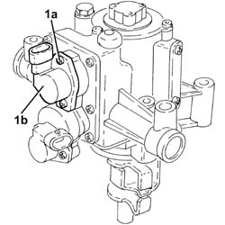

2127E40 hydraulic selection gearbox speed selection position sensor - r r
- Path
- Procedures > 21 GEARBOX > 2127 ELECTRO-HYDRAULIC SELECTION. GEARBOX EXTERNAL. CONTROLS > 2127E electric speed selection system > 2127E40 hydraulic selection gearbox speed selection position sensor - r r
- Kind
- repair procedure (removal / refitting; the operation number is the code)
- Applies to
- engines: 3.2 V6; all production periods
- Interactive page
- https://sloeber94.github.io/elrnDB-a147/en/#/3025172
Applies to: engines: 3.2 V6; all production periods; only with equipment: Cambio robotizzato
 Removing
Removing
 Refitting
RefittingProceed with removal 5530B10 battery - r+r .
Proceed with removal 5530B52 Battery DRIP TRAY/SUPPORT - R.R. .
Proceed with removal 1048A10 air cleaner filtering element - replace .
Proceed with removal 2127C48 GEAR ENGAGEMENT ELECTRO-HYDRAULIC SELECTION DEVICE - R.R. .
1. Loosen the bolts (1a) and remove the electro-hydraulic gear selection position sensor (1b).

Applies to: engines: 3.2 V6; all production periods; only with equipment: Cambio robotizzato
Refitting
RemovingPlace the gear selection position sensor for the electro-hydraulic selection gearbox back in its housing taking care to charge the potentiometer, then fasten it using the bolts.
.Proceed with refitting 2127C48 GEAR ENGAGEMENT ELECTRO-HYDRAULIC SELECTION DEVICE - R.R. .
.Proceed with refitting 1048A10 air cleaner filtering element - replace .
.Proceed with refitting 0010T47 hydraulic system fluid for gearbox with hydraulic selection check level and top up if necessary .
.Proceed with refitting 0010T48 hydraulic system for gearbox with hydraulic selection bleed air .
.Proceed with refitting 5530B52 Battery DRIP TRAY/SUPPORT - R.R. .
.Proceed with refitting 5530B10 battery - r+r .
Topics linked from this page (6)
- 0010T47 hydraulic system fluid for gearbox with hydraulic selection check level and top up if necessary
- 0010T48 hydraulic system for gearbox with hydraulic selection bleed air
- 1048A10 air cleaner filtering element - replace
- 2127C48 GEAR ENGAGEMENT ELECTRO-HYDRAULIC SELECTION DEVICE - R.R.
- 5530B10 battery - r+r
- 5530B52 Battery DRIP TRAY/SUPPORT - R.R.